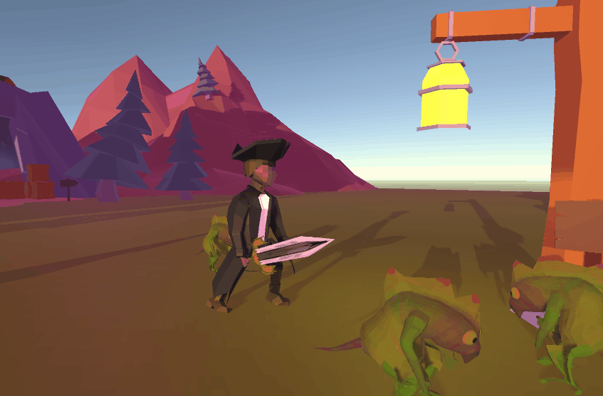
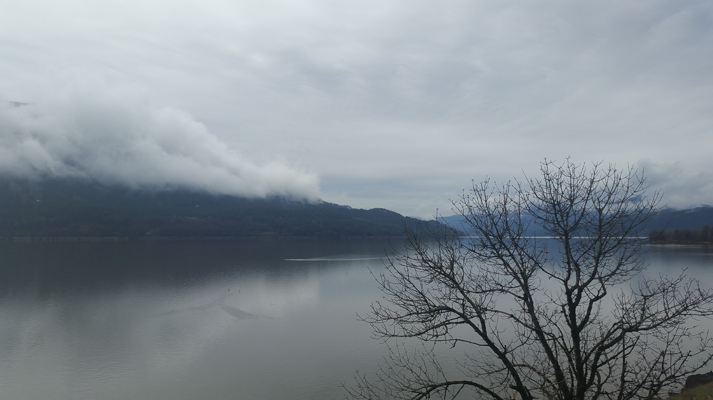
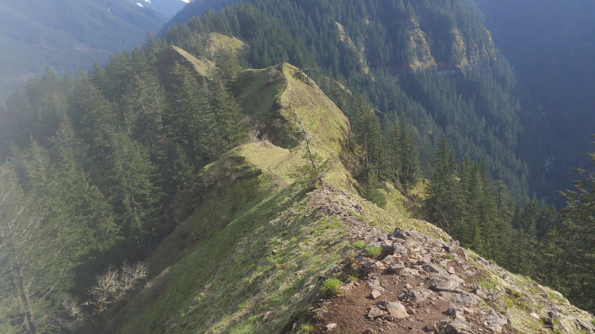
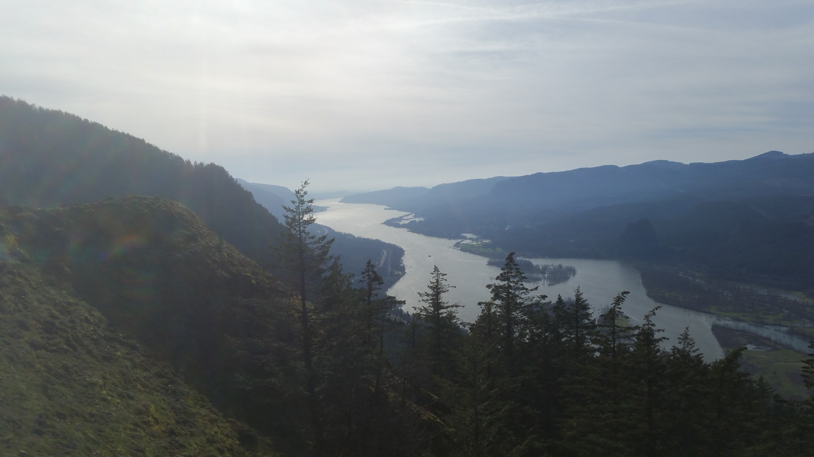
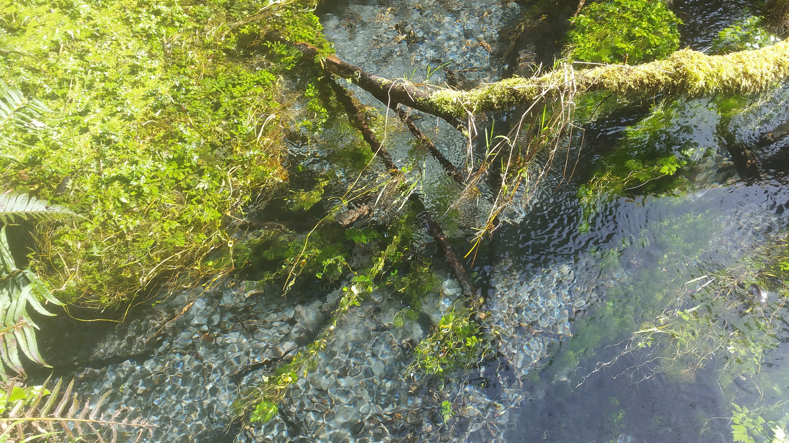
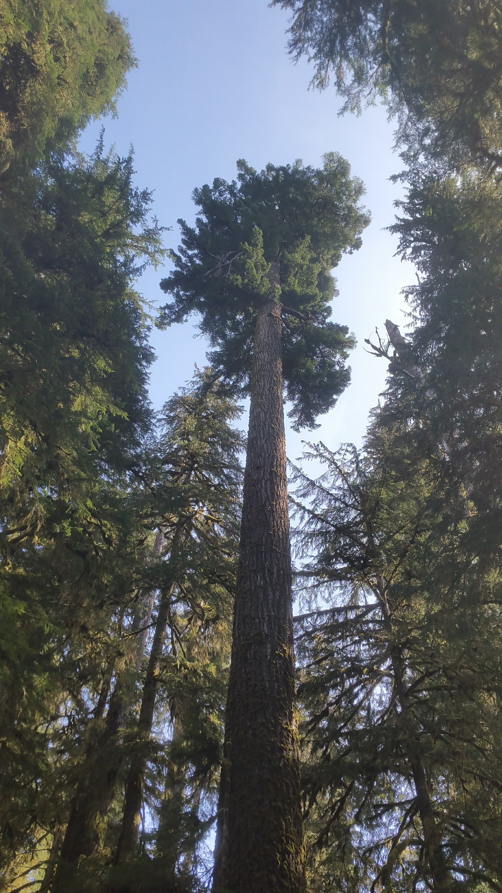
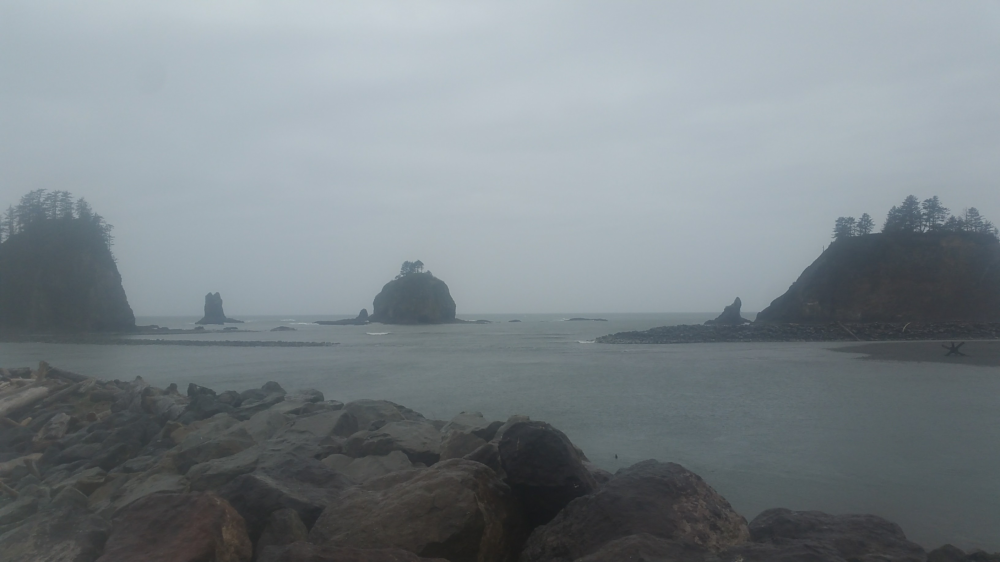

Crater Lake, haha... awkward. Crater Lake was buried in some multiple feet of snow, as we saw on their livestreams right before we headed in. Frustrated by our recent lack of luck with the weather, we swore Crater Lake was now on our list of to-return-to-soon locations. Thankfully, Lacey's friend Sam (and her girlfriend Danielle) lived in nearby Eagle Point!
Southwestern Oregon is an interesting place. There are a lot of weird hill-types, but - because of the recent cannabis legislation - tons of young people are moving to the area and buying land to start farms. Sam and Danielle lived and worked on one such farm! So they greeted us warmly with some Oregon love, and kept it flowing up until we were driving away. Thanks so much, again!! We're expecting to be returning to the area to see them again when we see Crater Lake.
From there we traveled northward--camping a bit on the way--to Eugene, a quaint little city connected to the University of Oregon. We encountered more "Oregon love" at a cafe in the city, apparently lots of people wanted to celebrate legalization with the out-of-staters. A few lazy days in Eugene had me working on a new game, which I'm currently calling Folk Heroes, and my hands dirty with first modeling and animation experience.
Lacey has dubbed the placeholder character's name "Ranger Daniel"
I've been juggling a lot of aspects of the game development pipeline with this one, it's largely just a fun project... but I've been working on official-sounding stuff like "user experience treatments" and "game design documents", so we'll see. After Eugene we struck north again - avoiding the capitol of Salem per the advice of two guys we met in Eugene, apparently the police there pick on out-of-staters - and found ourselves wandering up the Columbia River Gorge.
Incredible.
I could rant and rave and ramble all day about the Columbia River. Not only is it filled with lush, green forests - there's hiking and waterfalls GALORE.

The gorgeous Elowah Falls
We spent our first day driving all the way to "Dry Side", the part of the state beyond the wall of the Pacific Crest. The towering cliffs of evergreen forest fade away into rolling hills dotted with wineries, followed by stark, flat plains to the east--a place some refer to as "the Oregon desert." Dry Side was beautiful, and the drive was peaceful and filled with scenery, but we wanted to camp in a rainy forest! So we headed westward, downriver, once more - and found an amazing place on the way: Margie's Pot Shop! It was our first experience buying recreational marijuana... we were flabbergasted, excited, and in disbelief. But it happened. And it was great. Thanks Margie!
We camped that evening at the base of Table Mountain, on the Washington side just north of the Bridge of the Gods. There were some locals using the place as a DIY shooting range, but it was beautiful and serene all the same! We headed into Portland to shower and clean up before meeting my friend Ben (check out some of his animation work here) in the city. He chilled with us, and took us on some dope hikes into--and above--the Gorge! (The photo of Elowah Falls above is actually from the same hike as the photo below)
 Munra Point, high above Cascade Locks, OR
Ben also took us to sample some of the local cuisine/brewing--we had a very brief experience, but goddamn if it wasn't some of the best bar food I've ever eaten in my life! We found ourselves headed out from Portland as the rain returned (the day we hiked Munra was our first real sunshine since entering Oregon!), both knowing it was a city we'd return to someday.
We stayed out a night in the quaint town of St Helens. We met some local high school "hippies", who all could do with some experiences away from their small Oregonian town, but were very cool nonetheless. After St Helens, we drove down the continually-beautiful Columbia River (which was so wide at this point it appeared more a sea than a river) and crossed into Washington state via the bridge in Astoria. Across the river we explored down the peninsula of Long Beach (longest beach in the world!) and admired its black sands and creepingly gradual tide.
Next up was Kurt Cobain country, AKA the area surrounding the quiet/maybe depressed city of Aberdeen. "We feel ya, Kurt," pretty much summed out our impressions of the city. But then we were in Rain Forest country, on the Washington Peninsula! We spent our first night camping out along the river in the Hoh Rain Forest, just outside the main route to Olympus Peak. The Hoh River rushed alongside us all night, but the rain held off nearly our entire time in the Rain Forest. We spent the next day hiking up the river to see some elk, waterfalls, and so. much. moss!!!
Look at how clear the water is!
Some mighty big cedar trees, as well
Earlier today we found ourselves meandering along the peninsula coast, stopping in to the tiny coastal town of La Push to view the beautiful and stark coast line.
It's pouring rain and lovely.
Finally finding ourselves an open visitor center for Olympic National Park, we've got some more waterfalls and mountains along the coast in our near future! Today is some recuperation in the small city of Port Angeles (where there is a ferry to Vancouver Island... very tempting...) Tomorrow we are headed to Crescent Lake and Merrymere Falls, and probably hiking up to Thunder King Peak! There's also some coastal hiking, tomorrow or the day after, that will take us to the westernmost point of the Continental 48! (After that, we'll have Easternmost, Southernmost, and Westernmost! Northernmost comes very soon...)
I also hope to have some more updates about my game, when they come, or maybe a few more beats. I've also been writing, again... maybe I'll post some of that too. Who knows, this coast is so damn lovely I find it hard to focus on much else :)
Thanks for reading, stay tuned for more!
Mileage: 15850
Weather: Clear, cool, 60F
Currently listening to: Gorillaz - Demon Days
Can't wait for the new album!!